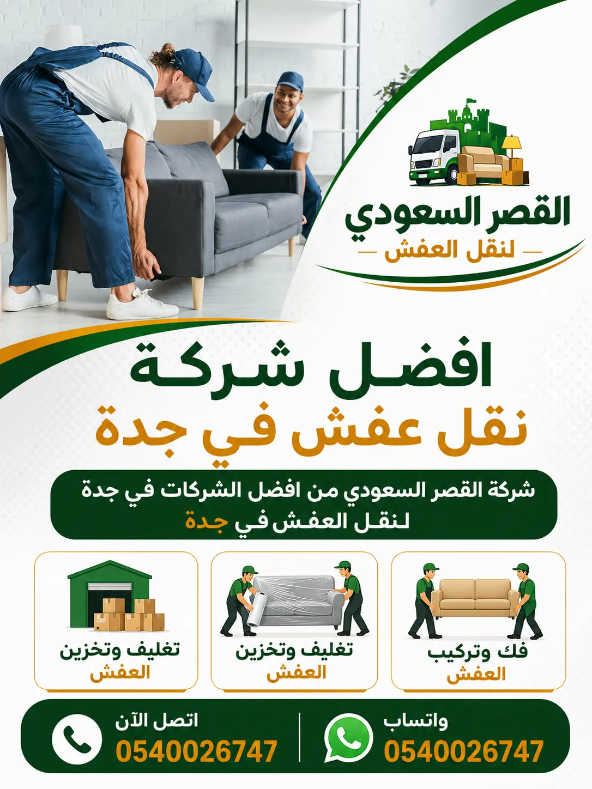

الكلمات المفتاحية:
أفضل شركة نقل الأجهزة الكهربائية بجدة بأسعار تنافسية وخدمة 24 ساعة
تعتبر شركة نقل الأجهزة الكهربائية بجدة القصر السعودي من أفضل الشركات المتخصصة في مجال نقل الأجهزة الكهربائية، حيث نمتلك خبرة طويلة تصل إلى أكثر من 15 عاماً في تقديم خدمات نقل الثلاجات والغسالات والمكيفات والأفران والمجمدات. نحن أفضل شركة نقل أجهزة كهربائية بجدة بفضل سمعتنا الممتازة وخدماتنا المتميزة.
نحن ندرك أن نقل الأجهزة الكهربائية يختلف تماماً عن نقل الأثاث العادي، فهذه الأجهزة تحتوي على قطع حساسة مثل كمبروسور الثلاجة، وطلمبة الغسالة، وموتور المكيف، والتي يمكن أن تتضرر بسهولة إذا لم يتم نقلها بالطريقة الصحيحة. لذلك، نتبع أساليب علمية دقيقة في نقل الأجهزة الثقيلة بدون تلف، مع الاهتمام بتفريغ الغازات وتثبيت القطع الداخلية.
نقدم خدمات نقل الثلاجات في جدة بوضع رأسي لتجنب تلف الكمبروسور، ونقل الغسالات بجدة بعد تثبيت الحوض الداخلي، ونقل المكيفات بجدة مع تفريغ الغاز وفكه بواسطة فنيين متخصصين. كما نقدم خدمة تغليف الأجهزة الكهربائية في جدة باستخدام أفضل المواد لحماية الأجهزة من الخدوش والصدمات.

ملخص سريع لخدمة نقل الأجهزة الكهربائية:
نحن نقدم خدمة نقل الأجهزة الكهربائية بجدة بشروط ممتازة: خبرة 15 عاماً، فنيين متخصصين، سيارات مجهزة، التزام بالمواعيد، وتغطية لجميع أحياء جدة. أفضل شركة نقل أجهزة كهربائية بجدة تنتظر اتصالك لخدمة أجهزتك.
خدمات نقل الأجهزة الكهربائية بجدة المتكاملة للمنازل والشركات
نقل الثلاجات بجدة – خدمة آمنة للثلاجات المنزلية والصناعية
نحن متخصصون في نقل الثلاجات بجدة بكافة أنواعها وأحجامها، من الثلاجات المنزلية الصغيرة إلى الثلاجات الصناعية الضخمة. نقل الثلاجات يتطلب عناية خاصة لأن الكمبروسور حساس جداً للاهتزازات والميلان. لذلك، ننقل الثلاجات بوضع رأسي فقط، ونثبت الأرفف والأدراج جيداً قبل النقل. ننصح عملاءنا بقراءة نصائح قبل نقل الأجهزة الكهربائية للاستعداد بشكل أفضل. قبل نقل الثلاجة، نقوم بتفريغ محتوياتها وتذويب الثلج المتراكم، ثم نغلق الأبواب بشريط لاصق قوي لمنع فتحها أثناء النقل. نستخدم سيارات مجهزة بأنظمة تثبيت حديثة مع أرضيات غير قابلة للانزلاق، ونثبت الثلاجة بأحزمة قابلة للضبط. بعد الوصول إلى الموقع الجديد، ننصح بالانتظار 4-6 ساعات قبل تشغيل الثلاجة للسماح للزيوت بالاستقرار في الكمبروسور. نقدم أيضاً خدمة نقل الأجهزة الكهربائية في الفلل بجدة، حيث نتعامل مع السلالم والممرات الضيقة باحترافية.
نقل الغسالات بجدة – فك وتركيب غسالات أوتوماتيك وفوق أوتوماتيك
نقدم خدمة نقل الغسالات بجدة بأنواعها المختلفة: الأوتوماتيك، الفوق أوتوماتيك، والغسالات العادية. قبل نقل الغسالة، نقوم بتفريغ الماء المتبقي من الخراطيم، وتثبيت الحوض الداخلي باستخدام مسامير التثبيت (إذا كانت متوفرة)، أو نستخدم مواد تعبئة خاصة لمنع حركة الحوض. نغلق باب الغسالة بشريط قوي ونلفها بطبقتين من البلاستيك الفقاعي. الغسالات من الأجهزة الثقيلة التي تتطلب خبرة في الحمل، لذلك يستخدم فريقنا أحزمة حمل خاصة لتوزيع الوزن بشكل متساوٍ. بعد الوصول، نقوم بفك مواد التثبيت وتوصيل الخراطيم بالمصادر الجديدة. نقدم أيضاً نقل الأجهزة الكهربائية للشقق والفلل والمكاتب بأسعار تنافسية.

نقل المكيفات بجدة – فك وتركيب مكيفات شباك وسبليت ومركزي
نحن متخصصون في فك وتركيب المكيفات بجدة لجميع الأنواع: شباك، سبليت، وأجهزة التكييف المركزي. نقل المكيفات يتطلب فنيين متخصصين لأنها تحتوي على غاز التبريد الذي يجب تفريغه قبل الفك وفقاً للإجراءات البيئية الصحيحة. نقوم بتفريغ الغاز باستخدام أجهزة خاصة، ثم فك الوحدة الداخلية والخارجية بحذر، وتغليفها بمواد عازلة. بعد النقل، نقوم بإعادة تركيب المكيف في الموقع الجديد، وشحن النظام بالغاز، واختبار التشغيل للتأكد من عدم وجود تسريبات. نقدم ضماناً على جميع أعمال فك وتركيب المكيفات لمدة 30 يوماً. للمزيد من المعلومات، يمكنك زيارة دليل فك وتركيب الأجهزة الكهربائية بجدة.
نقل الأفران والمجمدات بجدة – نقل آمن للأجهزة الثقيلة
نقدم خدمة نقل الأفران والمجمدات بجدة بكفاءة عالية. الأفران (الغاز أو الكهرباء) والمجمدات من الأجهزة الثقيلة التي تحتاج إلى فريق ذو خبرة في الحمل والرفع. قبل نقل الفرن، نقوم بتأمين الباب ومنع فتحه، وإزالة الرفوف الداخلية وتغليفها بشكل منفصل. المجمدات تتعامل بنفس طريقة الثلاجات، حيث يجب نقلها بوضع رأسي فقط، وتجنب تشغيلها لمدة 4-6 ساعات بعد النقل. نستخدم سيارات مخصصة ذات أرضيات منخفضة لتسهيل عملية تحميل وتفريغ الأجهزة الثقيلة. يمكنك أيضاً الاطلاع على خدماتنا في نقل الأجهزة الكهربائية في جدة والتي تغطي جميع أحياء المدينة.
نقل الأجهزة الإلكترونية – تلفزيونات، كمبيوترات، وأجهزة صوت
نقدم خدمة نقل الأجهزة الإلكترونية بجدة مثل التلفزيونات وأجهزة الكمبيوتر وأجهزة الصوت وأنواع مختلفة من الأجهزة الحساسة. هذه الأجهزة تحتاج إلى تغليف خاص باستخدام مواد مضادة للكهرباء الساكنة وصناديق مبطنة. نقوم بتغليف كل جهاز على حدة، مع وضع علامات تشير إلى "هذا الجانب للأعلى" و"قابل للكسر". نستخدم عربات خاصة ذات عجلات مطاطية لنقل الأجهزة الإلكترونية بدون اهتزازات. للمزيد من النصائح حول نقل الأجهزة الإلكترونية، يمكنك قراءة خدمات نقل الأجهزة المنزلية بجدة لدينا.
تغليف الأجهزة الكهربائية – حماية فائقة من الصدمات
نستخدم أفضل مواد تغليف الأجهزة الكهربائية في جدة لحماية أجهزتك الثمينة: بلاستيك فقاعي عالي الكثافة (3 طبقات)، كراتين مقواة مزدوجة السمك، أغطية قماشية واقية من الغبار، وزوايا بلاستيكية وكرتونية للأطراف الحادة. قبل التغليف، نقوم بتنظيف الأجهزة من الغبار والأوساخ، ثم نلفها بطبقة أولى من البلاستيك الفقاعي، ثم طبقة ثانية من الكرتون، ثم نربطها بأحزمة متينة. للأجهزة الزجاجية مثل شاشات التلفزيون، نستخدم صناديق خشبية مبطنة بالرغوة. يمكن الاطلاع على تغليف وتخزين الأجهزة الكهربائية بجدة لمزيد من التفاصيل عن خدماتنا في هذا المجال.
مميزات شركة نقل الأجهزة الكهربائية بجدة القصر السعودي
أفضل شركة نقل أجهزة كهربائية بجدة بأسعار تنافسية
أفضل شركة نقل أجهزة كهربائية بجدة تقدم أسعاراً تنافسية تناسب ميزانيات الجميع. نضمن لك أرخص الأسعار لخدمات نقل الأجهزة الكهربائية مع الحفاظ على أعلى مستويات الجودة. تبدأ أسعار نقل الجهاز الواحد من 150 ريال فقط. نقدم أيضاً دليل اختيار شركة نقل الأجهزة الكهربائية لمساعدتك في اتخاذ القرار الصحيح.
فنيين متخصصين في فك وتركيب الأجهزة
نوفر فنيين متخصصين في فك وتركيب الأجهزة الكهربائية على أعلى مستوى، مع خبرة تزيد عن 10 سنوات في التعامل مع جميع الماركات العالمية (سامسونج، إل جي، باناسونيك، وغيرها). جميع فنيينا حاصلون على شهادات تدريبية معتمدة. للمزيد عن خدماتنا المتخصصة، قم بزيارة خدمات فك وتركيب الأجهزة الكهربائية بجدة.
سرعة في تنفيذ خدمة نقل الأجهزة
نقدم نقل أجهزة كهربائية سريع جدة بفضل انتشار فرقنا في جميع أحياء جدة. نصل إليك خلال 30 دقيقة من الاتصال في حالات الطوارئ. نعرف أهمية الأجهزة الكهربائية في حياتك اليومية، لذلك نعمل على تقليص وقت النقل إلى أقصى حد ممكن. يمكنك قراءة نقل الأجهزة الكهربائية بجدة لمعرفة المزيد عن سرعة خدماتنا.
ضمان سلامة الأجهزة الكهربائية
نقدم ضماناً كاملاً على جميع عمليات نقل الأجهزة الكهربائية بجدة. في حالة حدوث أي ضرر (وهو أمر نادر جداً، أقل من 0.5% من العمليات)، نتحمل مسؤولية الإصلاح أو التعويض الكامل. نستخدم أحدث أساليب نقل الأجهزة الكهربائية شمال جدة لضمان أعلى مستويات الأمان.
خدمة عملاء 24 ساعة
شركة نقل أجهزة كهربائية جدة 24 ساعة متاحة لخدمتك في أي وقت. يمكنك الاتصال بنا في أي وقت من اليوم أو الليل للحجز أو الاستفسار. نقدم أيضاً سيارات نقل الأجهزة الكهربائية في جدة المجهزة بأحدث التقنيات.
سيارات نقل حديثة للأجهزة الكهربائية
أسطولنا من سيارات نقل الأجهزة الكهربائية يشمل سيارات مغلقة بأحجام مختلفة، مجهزة بأحدث أنظمة التثبيت والحماية مثل الأرضيات المبطنة وأحزمة التثبيت. نستخدم مستودعات تخزين الأجهزة الكهربائية للتخزين المؤقت إذا احتجت لذلك.
خطوات نقل الأجهزة الكهربائية بجدة مع شركة القصر السعودي
معاينة الأجهزة وتقييم حالتها
نقوم بمعاينة جميع الأجهزة الكهربائية المراد نقلها، ونتحقق من حالتها التشغيلية، ونلاحظ أي عيوب موجودة مسبقاً. نقدم تقريراً مفصلاً عن حالة كل جهاز قبل النقل، وننصح بأفضل طريقة لنقل كل جهاز حسب نوعه وحجمه. هذه المعاينة مجانية تماماً ولا تلزمك بأي شيء.
تفريغ الأجهزة وتجهيزها
نقوم بتفريغ محتويات الثلاجات والمجمدات، وفصل خراطيم الغسالات، وتفريغ غاز المكيفات بشكل آمن بيئياً. نزيل الرفوف والأدراج القابلة للفك ونغلفها بشكل منفصل. نثبت الأجزاء الداخلية المتحركة لمنع تحركها أثناء النقل. نغلق الأبواب بشريط لاصق قوي.
تغليف احترافي للأجهزة
تغليف جميع الأجهزة الكهربائية باستخدام أفضل المواد: بلاستيك فقاعي عالي الكثافة (3 طبقات)، كراتين مقواة، أغطية قماشية، وصناديق خشبية مخصصة للأجهزة الزجاجية. نستخدم مواد عازلة للكهرباء الساكنة للأجهزة الإلكترونية الحساسة.
النقل بسيارات مجهزة
نقل الأجهزة الكهربائية باستخدام سيارات مغلقة ومجهزة بأنظمة تثبيط الصدمات، مع أحزمة تثبيت قابلة للضبط. نثبت كل جهاز على حدة لمنع تحركه وتصادمه مع الأجهزة الأخرى. نقوم بنقل الثلاجات والمجمدات بوضع رأسي فقط.
التركيب في الموقع الجديد
بعد الوصول إلى الموقع الجديد، نقوم بتفريغ الأجهزة وتركيبها في الأماكن المحددة. نعيد توصيل خراطيم الغسالات والمجمدات، ونركب المكيفات ونشحنها بالغاز، ونختبر تشغيل جميع الأجهزة للتأكد من عملها بشكل صحيح. ننصح بالانتظار 4-6 ساعات قبل تشغيل الثلاجات والمجمدات.
التسليم والضمان
بعد الانتهاء من التركيب، نقوم بجرد جميع الأجهزة مع العميل والتأكد من سلامتها وخلوها من أي أضرار. نقدم ضماناً كاملاً على الخدمة لمدة 30 يوماً. أي مشكلة تظهر خلال هذه الفترة، نتعامل معها فوراً دون أي تكلفة إضافية.
لماذا نحن أفضل شركة نقل الأجهزة الكهربائية بجدة؟
عند مقارنة شركات نقل الأجهزة الكهربائية بجدة، ستجد أن شركة القصر السعودي تتفوق في عدة جوانب:
أسعار نقل الأجهزة الكهربائية بجدة – عروض خاصة
نقدم في شركة نقل الأجهزة الكهربائية بجدة القصر السعودي أفضل أسعار نقل الأجهزة الكهربائية. الأسعار التالية شاملة (الفك، التغليف، النقل، التركيب) مع ضمان كامل:
| الجهاز الكهربائي | السعر (ريال سعودي) | الخدمات المشمولة | الضمان |
|---|---|---|---|
| ثلاجة عادية (حتى 14 قدم) | يبدأ من 150 ريال | تغليف + نقل + تركيب | 30 يوم |
| ثلاجة كبيرة (أكثر من 14 قدم) | يبدأ من 200 ريال | تغليف + نقل + تركيب | 30 يوم |
| غسالة أوتوماتيك | يبدأ من 120 ريال | فك + تغليف + نقل + تركيب | 30 يوم |
| مكيف شباك | يبدأ من 100 ريال | فك + نقل + تركيب | 30 يوم |
| مكيف سبليت (وحدة واحدة) | يبدأ من 200 ريال | فك غاز + نقل + تركيب + شحن غاز | 60 يوم |
| فرن غاز/كهرباء | يبدأ من 120 ريال | تغليف + نقل + تركيب | 30 يوم |
| تلفزيون (حتى 55 بوصة) | يبدأ من 80 ريال | تغليف خاص + نقل | 30 يوم |
| مجمدة (صندوقية) | يبدأ من 150 ريال | تغليف + نقل + تركيب | 30 يوم |
عرض خاص للأجهزة المتعددة:
خصم 15% عند نقل 3 أجهزة أو أكثر، بالإضافة إلى تغليف مجاني لجميع الأجهزة. كما نقدم خدمة مجانية لتنظيف الأجهزة بعد التركيب للمتعاقدين على باقة نقل منزل كامل. تخزين الأجهزة الكهربائية بجدة متاح أيضاً بأسعار خاصة.
مناطق خدمة نقل الأجهزة الكهربائية في جدة
نقدم خدمات نقل الأجهزة الكهربائية بجدة لجميع أحياء المدينة. إليك قائمة بأهم الأحياء والمناطق التي نخدمها:
جميع الأجهزة
نقل مكيفات
نقل ثلاجات
نقل غسالات
نقل أفران
جميع الأجهزة
نقل مكيفات
نقل ثلاجات
نقل أجهزة
نقل غسالات
نقل مكيفات
أجهزة صناعية
هل تغطون منطقتي؟
نعم! نحن نغطي جميع أحياء ومناطق جدة بدون استثناء، بالإضافة إلى محافظة جدة بالكامل. إذا كنت تبحث عن شركة نقل أجهزة كهربائية بجدة تغطي منطقتك، فنحن الخيار الأمثل. كما نقدم خدمة نقل الأجهزة الكهربائية بين المدن إلى الرياض، مكة، الدمام، المدينة، وأبها. اتصل بنا للتأكد من وصول خدماتنا لمنطقتك.
الأسئلة الشائعة عن نقل الأجهزة الكهربائية في جدة
احجز الآن خدمة نقل الأجهزة الكهربائية بجدة مع أفضل شركة نقل أجهزة
اتصل بأفضل شركة نقل الأجهزة الكهربائية بجدة الآن واحصل على عرض سعر فوري وخصم خاص. نضمن لك نقل أجهزتك بأمان مع ضمان كامل وخدمة 24 ساعة.
شركة نقل الأجهزة الكهربائية بجدة - نقل ثلاجات - نقل غسالات - نقل مكيفات - أفضل شركة نقل أجهزة كهربائية
خدمات أخرى قد تحتاجها من أفضل شركة نقل الأجهزة الكهربائية بجدة


زيارة الموقع الرسمي للشركة
للمزيد من المعلومات عن جميع خدماتنا المتخصصة في نقل الأجهزة الكهربائية، وشاهد أعمالنا السابقة، زوروا موقعنا الرسمي
الموقع الرسمي للقصر السعودي لنقل الأجهزة الكهربائية